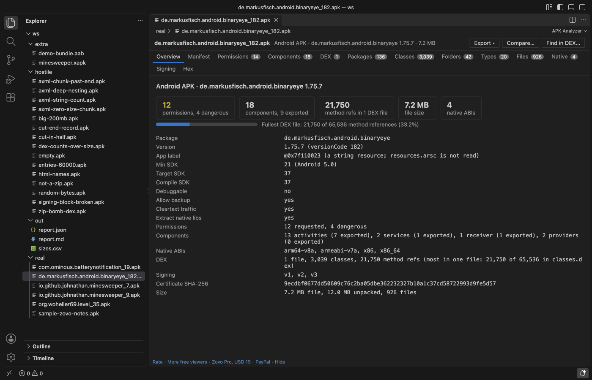

Open files in VS Code and Cursor / Binary, network and hardware
See which native ABIs an APK contains
An APK keeps its native code as .so files in one folder per ABI under lib/. If an APK has native libraries but none for the CPU of a phone, the install fails with INSTALL_FAILED_NO_MATCHING_ABIS. APK Analyzer opens the .apk in VS Code and lists every ABI with its libraries, file count and size, with no Android SDK and no Java. Zovo Pro (USD 19 once) adds a compare of two APKs that shows when the ABIs changed, with 3 free tries.
Free, MIT license. Extension ID zovo.zovo-apk-analyzer, version 0.1.0. Needs VS Code 1.90.0 or newer.

Steps in VS Code
- Install APK Analyzer from the Marketplace, or press Ctrl+P (Cmd+P on macOS) and run
ext install zovo.zovo-apk-analyzer. - Click the
.apkfile in the Explorer. It opens in APK Analyzer..aab,.apksand.xapkfiles open too. - Read the Overview. The Native ABIs row lists the ABIs, for example
arm64-v8a, armeabi-v7a, x86, x86_64, or says "none (no native libraries)". The Extract native libs row shows theextractNativeLibsflag of the manifest. - Open the Native tab. Each ABI has one row with its number of files, the compressed and unpacked size and the names of its libraries.
- To look at one library, open the Files tab and type
lib/arm64-v8ain the filter box. The hex link of a row shows the unpacked bytes of that.sofile. - The copy button above a table puts the rows you see on the clipboard as tab-separated text.
Where Zovo Pro saves time
Every tab of APK Analyzer is free, with no limit and no sign-in. That covers the Overview, the Native, Files, Folders and Types tabs, the decoded manifest, permissions, DEX counts and signing. The APK is read in a worker thread, it is never changed, and nothing is sent over the network.
When a device reports a missing ABI or a release grows, the question is what changed since the last build. Compare two APKs reads a second APK and lists the fields that differ, such as the native ABIs, version, SDK levels, signing schemes and certificate SHA-256. It also lists permissions and components added or removed, size changes by file and folder and method references per package, and saves a Markdown report. The other Pro tools export the report as JSON, Markdown or CSV and find a class, method or string in the DEX files.
With Compare two APKs (Zovo Pro)
- Open the newer APK and click Compare... at the top of the viewer, or right-click the APK in the Explorer and pick "Compare two APKs (Pro)". The Command Palette has "APK Analyzer: Compare two APKs (Pro)".
- Pick the other APK in the file dialog. Escape or Cancel uses no try.
- Read the result in the viewer and open it as Markdown to keep it. A try is used only when the result shows.
Compare two APKs works 3 times on your computer before it asks for a license, and a try counts only when you get a result. Opening a file shows no popup and no countdown.
Zovo Pro costs USD 19 once. It is not a subscription, and it turns on the Pro tools in every Zovo extension, not only APK Analyzer. After a card payment (Stripe) your license key shows on the next page. In VS Code, run "Zovo Pro: Enter Zovo Pro license key" from the Command Palette and paste it. The key is checked on your computer, with no network call. With GitHub Sponsors, pick the "$19 one time" tier, then run "Zovo Pro: I already paid: unlock with GitHub Sponsors" and sign in with the same GitHub account. With PayPal, send USD 19 with "Zovo Pro" in the note and the key comes by email within a day.
A team of 5: USD 59 once, by card or by PayPal. Every rule and every Pro tool is on the Zovo Pro page.
Steps in Cursor, Windsurf or VSCodium
- Open the Extensions view with Ctrl+Shift+X (Cmd+Shift+X on macOS).
- Search for
zovo.zovo-apk-analyzerand click Install. Cursor, Windsurf and VSCodium install from Open VSX, where it is published aszovo/zovo-apk-analyzer. - If your editor has no gallery, download the .vsix from the Open VSX page and run "Extensions: Install from VSIX...".
- Then use it the same way as in VS Code.
What APK Analyzer handles
.apkfiles, with the ABIs from thelib/folder..aabbundles, with the ABIs from thelib/folder of each module..apkssets and.xapkfiles. The APKs inside are listed, and the base APK is read in the other tabs.- Any ABI folder name, such as
arm64-v8a,armeabi-v7a,x86,x86_64orriscv64.
What it does not do
- The Native tab groups libraries by their folder. It does not read the ELF header of each
.sofile, so it does not check that a library really matches its folder. - In an
.apksor.xapkset, the tabs cover the base APK. ABI splits such asconfig.arm64_v8a.apkshow as separate APKs in the list. - The Libraries column names up to 40 libraries per ABI. The file count covers all of them.
- Files on remote or virtual file systems are read up to 256 MB.
Other options
- APK Analyzer in Android Studio. Free. Build, then Analyze APK shows the
lib/folder with each ABI. It needs the full Android Studio install. - unzip. An APK is a ZIP file, so
unzip -l app.apk "lib/*"lists the native libraries in a terminal.
Install counts and Open VSX status were checked on 13 November 2026. Descriptions in quotes are the extensions' own.
Questions
Why does my app fail with INSTALL_FAILED_NO_MATCHING_ABIS?
The APK has native libraries, but none in a folder for the CPU of the device or emulator. Check the Native ABIs row. If the ABI of the device is missing, add it to the abiFilters of your Gradle build, or test on a device with one of the listed ABIs.
Do I need the Android SDK or Java?
No. APK Analyzer reads the ZIP, the manifest and the DEX files itself, offline. It never installs or runs the app.
Can I check the ABIs of two builds?
Yes. Open both APKs in two tabs and read the Native ABIs row of each, for free. The Compare two APKs Pro tool lists every difference at once.
Does it work in Cursor or Windsurf?
Yes. Cursor, Windsurf and VSCodium install extensions from Open VSX. Search for the extension in their Extensions view and install it there.
More about APK Analyzer
Read the APK Analyzer page for every feature and setting, or the source code on GitHub.
Related guides
- Compare two APK files in VS Code
- Read the AndroidManifest.xml and permissions of an APK
- Count the DEX methods of an APK, by package
- Read the signing certificate SHA-256 of an APK
Zovo Pro and support
Zovo Pro: USD 19 once, every Zovo viewer. It turns on the Pro tools in this extension and in the other Zovo extensions you use. The free features stay free.
After a card payment your license key shows on the next page. Paste it with the command "Zovo Pro: Enter a key".
You can also support the work with no Pro:
Need your format supported?
Open a format request with a sample file, and I reply there whether it can be done. For USD 299 once, through this GitHub Sponsors tier, I add your file format or a missing feature to this extension, with tests, within 7 days.